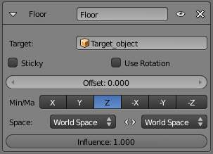

Floor Constraint¶
The Floor constraint allows you to use its target position (and optionally rotation) to specify a plane with a “forbidden side”, where the owner cannot go. This plane can have any orientation you like. In other words, it creates a floor (or a ceiling, or a wall)! Note that it is only capable of simulating entirely flat planes, even if you use the Vertex Group option. It cannot be used for uneven floors or walls.
Options¶

{kind=link}
Floor panel.
- Targets
This constraint uses one target, and is not functional (red state) when it has none.
- Bone
- When Target is an armature, a new field for a bone is displayed.
- Vertex Group
- When Target is a mesh, a new field is display where a vertex group can be selected.
- Sticky
- This button makes the owner immovable when touching the “floor” plane (it cannot slide around on the surface of the plane any more). This is fantastic for making walk and run animations!
- Use Rotation
- This button forces the constraint to take the target’s rotation into account. This allows you to have a “floor” plane of any orientation you like, not just the global XY, XZ and YZ ones...
- Offset
- This numeric field allows you to offset the “floor” plane from the target’s center, by the given number of Blender Units. Use it e.g. to account for the distance from a foot bone to the surface of the foot’s mesh.
- Max/Min
- This set of (mutually exclusive) buttons controls which plane will be the “floor”. The buttons’ names correspond indeed to the normal to this plane (e.g. enabling Z means “XY plane”, etc.) By default, these normals are aligned with the global axes. However, if you enable Use Rotation (see above), they will be aligned with the local target’s axes. As the constraint does not only define an uncrossable plane, but also a side of it which is forbidden to the owner, you can choose which side by enabling either the positive or negative normal axis... e.g. by default Z, the owner is stuck in the positive Z coordinates.
- Space
- This constraint allows you to choose in which space to evaluate its owner’s and target’s transform properties.